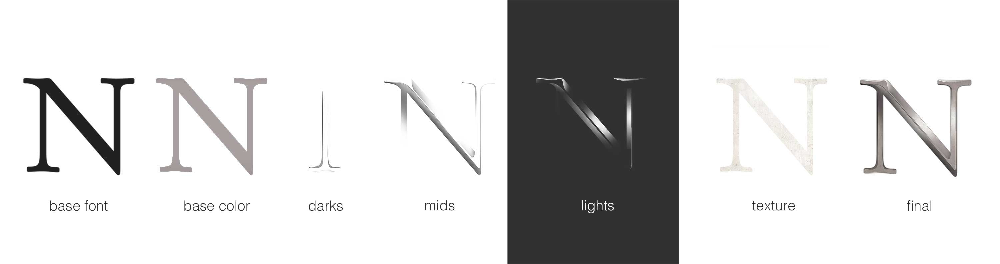

Created for the pre-production sales of the miniseries based on Miguel de Cervantes life.

the process
Created with a combination of illustrator and photoshop.
the concept
Focusing more on the influential events of his life rather than on his writings. We based the concept on a pivotal moment in Cervantes life where by using a rapier sword to defend his love in a battle Cervantes finds himself committing murder and becoming an enemy of the state. The idea was to replicate the swirling metal shapes found in rapier swords a curse of sorts. A reference to the moment his life changed and the adventure started.
The font
Garamond ( created a few years before Cervantes was born ) was chosen for its elegant showcase of the late sixteenth century styles. Also the added value of it being one of the most legible serif fonts till this day, allowed the press copy and later media relating to the story to have a cohesive style throughout.